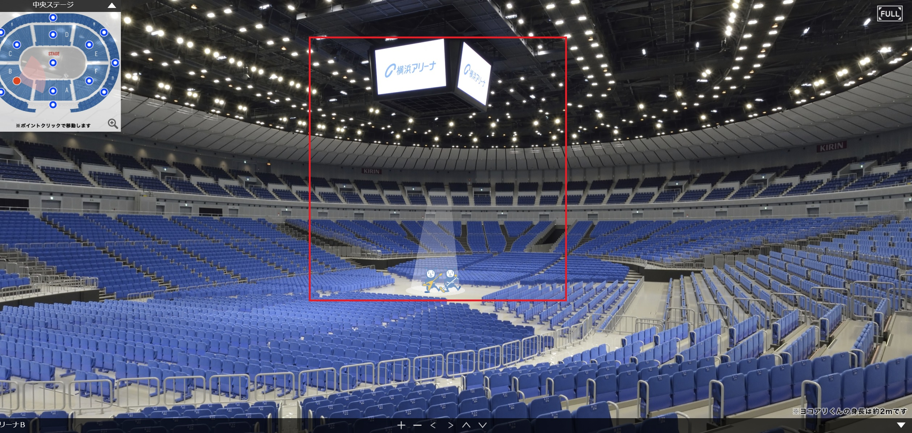
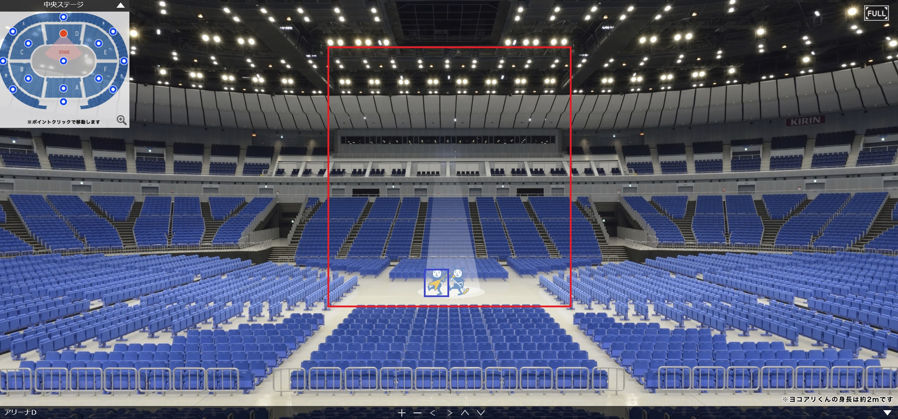

<!DOCTYPE html>
<html>

<head><meta name="generator" content="Hexo 3.8.0">
  <meta charset="utf-8">
  
    <title>
      
        スーパーワイドビノと坂本真綾25周年ライブ | 
            ほしよみ大学生のブログ
    </title>
    <meta name="viewport" content="width=device-width">
    <meta name="description" content="あいさつ先日坂本真綾25周年記念ライブに行ってきたわけですが，そこでスーパーワイドビノ2×54という双眼鏡を使ってみたのでレビューを書いていこうと思います．別に製品の回し者というわけではありませんが，これがなかなか良かったのです． ライブでの実力ははたして…．">
<meta name="keywords" content="その他,機材">
<meta property="og:type" content="article">
<meta property="og:title" content="スーパーワイドビノと坂本真綾25周年ライブ">
<meta property="og:url" content="http://dabokun.github.io/2021/03/25/00000049-super-wide-bino-live/index.html">
<meta property="og:site_name" content="ほしよみ大学生のブログ">
<meta property="og:description" content="あいさつ先日坂本真綾25周年記念ライブに行ってきたわけですが，そこでスーパーワイドビノ2×54という双眼鏡を使ってみたのでレビューを書いていこうと思います．別に製品の回し者というわけではありませんが，これがなかなか良かったのです． ライブでの実力ははたして…．">
<meta property="og:locale" content="ja">
<meta property="og:image" content="http://dabokun.github.io/2021/03/25/00000049-super-wide-bino-live/card.jpg">
<meta property="og:updated_time" content="2021-06-08T16:24:46.112Z">
<meta name="twitter:card" content="summary_large_image">
<meta name="twitter:title" content="スーパーワイドビノと坂本真綾25周年ライブ">
<meta name="twitter:description" content="あいさつ先日坂本真綾25周年記念ライブに行ってきたわけですが，そこでスーパーワイドビノ2×54という双眼鏡を使ってみたのでレビューを書いていこうと思います．別に製品の回し者というわけではありませんが，これがなかなか良かったのです． ライブでの実力ははたして…．">
<meta name="twitter:image" content="http://dabokun.github.io/2021/03/25/00000049-super-wide-bino-live/card.jpg">
<meta name="twitter:creator" content="@dabo_pic">
      
        <link rel="alternative" href="/atom.xml" title="ほしよみ大学生のブログ" type="application/atom+xml">
        
          
            <link rel="icon" href="/images/favicon.png">
            
              <link rel="stylesheet" href="/css/style.css">
                <!--[if lt IE 9]><script src="//html5shiv.googlecode.com/svn/trunk/html5.js"></script><![endif]-->
                
                  <script data-ad-client="ca-pub-1350688970555904" async src="https://pagead2.googlesyndication.com/pagead/js/adsbygoogle.js"></script>
</head></html>
<body>
  <div id="container">
    <div class="mobile-nav-panel">
	<i class="icon-reorder icon-large"></i>
</div>
<header id="header">
	<h1 class="blog-title">
		<a href="/">ほしよみ大学生のブログ</a>
	</h1>
	<nav class="nav">
		<ul>
			<li><a href="/">Home</a></li><li><a href="/categories">Categories</a></li><li><a href="/tags">Tags</a></li><li><a href="/archives">Archives</a></li><li><a href="/about">About</a></li><li><a href="/work">Work</a></li>
			<li><a id="nav-search-btn" class="nav-icon" title="Search"></a></li>
			<li><a href="https://github.com/dabokun"></a>
			</li>
			<li><a href="https://twitter.com/dabo_pic"></a></li>
			<li><a href="/atom.xml" id="nav-rss-link" class="nav-icon" title="RSS Feed"></a>
			</li>
		</ul>
	</nav>
	<div id="search-form-wrap">
		<form action="//google.com/search" method="get" accept-charset="UTF-8" class="search-form"><input type="search" name="q" class="search-form-input" placeholder="Search"><button type="submit" class="search-form-submit">&#xF002;</button><input type="hidden" name="sitesearch" value="http://dabokun.github.io"></form>
	</div>
</header>
    <div id="main">
      <article id="post-00000049-super-wide-bino-live" class="post">
	<footer class="entry-meta-header">
		<span class="meta-elements date">
			<a href="/2021/03/25/00000049-super-wide-bino-live/" class="article-date">
  <time datetime="2021-03-25T09:43:47.000Z" itemprop="datePublished">2021-03-25</time>
</a>
		</span>
		<span class="meta-elements author">astr0dab0</span>
		<div class="commentscount">
			
			<a href="http://dabokun.github.io/2021/03/25/00000049-super-wide-bino-live/#disqus_thread" class="article-comment-link">Comments</a>
			
		</div>
	</footer>
	
	<header class="entry-header">
		
  
    <h1 class="article-title entry-title" itemprop="name">
      スーパーワイドビノと坂本真綾25周年ライブ
    </h1>
  

	</header>
	<div class="entry-content">
		
		
		<div id="toc" class="toc-article">
			<p class="toc-title">目次</p>
			<ol class="toc"><li class="toc-item toc-level-3"><a class="toc-link" href="#あいさつ"><span class="toc-number">1.</span> <span class="toc-text">あいさつ</span></a></li><li class="toc-item toc-level-3"><a class="toc-link" href="#スーパーワイドビノとは"><span class="toc-number">2.</span> <span class="toc-text">スーパーワイドビノとは</span></a></li><li class="toc-item toc-level-3"><a class="toc-link" href="#早速使ってみた"><span class="toc-number">3.</span> <span class="toc-text">早速使ってみた</span></a></li><li class="toc-item toc-level-3"><a class="toc-link" href="#まとめ"><span class="toc-number">4.</span> <span class="toc-text">まとめ</span></a></li></ol>
		</div>
		
		<h3 id="あいさつ"><a href="#あいさつ" class="headerlink" title="あいさつ"></a>あいさつ</h3><p>先日<a href="https://lp.p.pia.jp/shared/cnt-s/cnt-s-11-02_2_e5df5bca-0ede-4ada-9150-a3dca1884304.html?detail=true" target="_blank" rel="noopener">坂本真綾25周年記念ライブ</a>に行ってきたわけですが，そこで<strong>スーパーワイドビノ2×54</strong>という双眼鏡を使ってみたのでレビューを書いていこうと思います．別に製品の回し者というわけではありませんが，これがなかなか良かったのです．</p>
<p>ライブでの実力ははたして…．</p>
<a id="more"></a>
<h3 id="スーパーワイドビノとは"><a href="#スーパーワイドビノとは" class="headerlink" title="スーパーワイドビノとは"></a>スーパーワイドビノとは</h3><p>スーパーワイドビノとはなんぞやという話ですが，笠井トレーディングさんから出ている<strong>「超超広角」</strong>星空観賞用双眼鏡です．双眼鏡というと比較的高倍率のものを想像し，見たい対象に寄れれば寄れるだけ良いと考える方が多いかもしれませんが，このスーパーワイドビノはどちらかというと低倍率のオペラグラス寄り，いやむしろ<strong>オペラグラスよりも倍率が低く（2倍）作られている</strong>のが大きな特徴です．ガリレオ式のためずっしりとしており，ガラスの塊を持っているような重厚感があります．<br>倍率が低い代わりに<strong>とても明るく，シャープに像を結ぶ</strong>ため，遠くの対象でも見た目は小さいのに鮮明に観察することができます．また<strong>見口が大きく</strong>，私は眼鏡をかけているのですが，かけたまま使用しても他の双眼鏡ほど視野が狭くなるということがありません．<br>星空で使用してみると，はくちょう座やオリオン座といった大きな星座が視野内にすっぽりと収まります．そして裸眼では見えていなかった細かい星々がグワッと浮かび上がり，<strong>没入度の高い星空を堪能できる</strong>アイテムです．<br>こいつをアーティストのライブでも使ってみようというわけです．</p>
<h3 id="早速使ってみた"><a href="#早速使ってみた" class="headerlink" title="早速使ってみた"></a>早速使ってみた</h3><p>横浜アリーナの，ステージはセンターパターン，席は1日目はアリーナB12列，2日目はアリーナD8列でした．詳しくは<a href="https://www.yokohama-arena.co.jp/seatguide/cstage.html" target="_blank" rel="noopener">こちら</a>をご覧ください．列番号だけ見るとあまり差がないように見えますが，センターステージからの距離は全く違ったので，良い比較になりました．<br>スーパーワイドビノと，VixenさんのジョイフルM（10倍）を持っていきましたので，それぞれがどんな感じの視界で見えたかを以下の画像に示します．<br>初日，アリーナBから眺めた感じ．<br><br>2日目，アリーナDから眺めた感じ．<br><br>（画像引用元：<a href="https://www.yokohama-arena.co.jp/seatguide/cstage.html" target="_blank" rel="noopener">https://www.yokohama-arena.co.jp/seatguide/cstage.html</a> パノラマギャラリー）</p>
<p>赤枠がスーパーワイドビノ，青枠がジョイフルMです．（記憶を頼りにこんなもんかなと書いてるので不正確さはあるかと思います）<br>スーパーワイドビノの圧倒的な視界の広さがおわかりかと思います．1日目の際はステージから上部の画面までがきれいに収まり，かつ像も良く，画面の映像から演者の顔や衣装など全て明るく鮮明に見ることができました．2日目は流石にセンターステージにかなり近づいたので，左右は鳥籠状の画面の幅ギリギリ収まらず，画面も上に行ってしまうと全ては収まりきらないという感じでしたが，ステージ全体だけであればよく見渡すことが可能でした．ステージ全体を見たいときはこれで，各演者に注目したいときはジョイフルで見ることで，ライブや観劇などの楽しさも倍増するのではないかと思います．<br>特に今回のライブではデュエットなどで10倍のジョイフルだと収まりが悪いことがあり，スーパーワイドビノで演出などを楽しむ→ジョイフルで視界いっぱいのルンバ真綾さんや内村さん，土岐さん，堂島さん，原さん，たまんねぇ！　といった楽しみ方をすることができました．<br>スーパーワイドビノの値段は2万円前後しますが，ライブでも星空でも使える楽しい双眼鏡でした．</p>
<h3 id="まとめ"><a href="#まとめ" class="headerlink" title="まとめ"></a>まとめ</h3><p>簡単にスーパーワイドビノについてまとめておきますと，値段以外の部分で</p>
<p>メリット</p>
<ul>
<li>倍率は2倍とそこまでではないが，明るくてシャープ．ライブや観劇でも，ステージ全体を見るのにとても良い．</li>
<li>見口が大きく，眼鏡をかけたままでもあまり問題なく見える．</li>
<li>本来の星空用途でももちろん使える．</li>
</ul>
<p>デメリット</p>
<ul>
<li>前玉がわりとしっかり出ていて（いわゆる出目金レンズほどではないが…）重いので，落としたりすると怖い．小さなお子さんなどは長時間持っていると重くて疲れてしまうかも．</li>
</ul>
<p>といった感じになります．一家に一台，いかがでしょうか．</p>

		
	</div>
	<footer class="article-footer">
		<a href="https://twitter.com/intent/tweet?text=%E3%82%B9%E3%83%BC%E3%83%91%E3%83%BC%E3%83%AF%E3%82%A4%E3%83%89%E3%83%93%E3%83%8E%E3%81%A8%E5%9D%82%E6%9C%AC%E7%9C%9F%E7%B6%BE25%E5%91%A8%E5%B9%B4%E3%83%A9%E3%82%A4%E3%83%96｜%E3%81%BB%E3%81%97%E3%82%88%E3%81%BF%E5%A4%A7%E5%AD%A6%E7%94%9F%E3%81%AE%E3%83%96%E3%83%AD%E3%82%B0&url=http://dabokun.github.io/2021/03/25/00000049-super-wide-bino-live/" class="twitter-share-button" target="_blank" title="Twitter"></a>
		<script async src="https://platform.twitter.com/widgets.js" charset="utf-8"></script>

		<div id="fb-root"></div>
		<script async defer crossorigin="anonymous" src="https://connect.facebook.net/ja_JP/sdk.js#xfbml=1&version=v4.0"></script>
		<div class="fb-share-button" data-href="http://dabokun.github.io/2021/03/25/00000049-super-wide-bino-live/" data-layout="button_count" data-size="small"><a target="_blank" href="https://www.facebook.com/sharer/sharer.php?u=https%3A%2F%2Fdabokun.github.io%2F&amp;src=sdkpreparse" class="fb-xfbml-parse-ignore">シェア</a></div>
	</footer>
	<footer class="entry-footer">
		<div class="entry-meta-footer">
			<span class="category">
				
  <div class="article-category">
    <a class="article-category-link" href="/categories/others/">その他</a>
  </div>

			</span>
			<span class=" tags">
				
  <ul class="article-tag-list"><li class="article-tag-list-item"><a class="article-tag-list-link" href="/tags/others/">その他</a></li><li class="article-tag-list-item"><a class="article-tag-list-link" href="/tags/equipments/">機材</a></li></ul>

			</span>
		</div>
	</footer>
	
	
<nav id="article-nav">
  
    <a href="/2021/03/28/00000050-qhy268c-first/" id="article-nav-newer" class="article-nav-link-wrap">
      <strong class="article-nav-caption">Newer</strong>
      <div class="article-nav-title">
        
          QHY268C ファーストライト
        
      </div>
    </a>
  
  
    <a href="/2021/02/09/00000048-fsq-ret-qhy268c/" id="article-nav-older" class="article-nav-link-wrap">
      <strong class="article-nav-caption">Older</strong>
      <div class="article-nav-title">
        
          ごほーこく
        
      </div>
    </a>
  
</nav>

	
</article>


<section id="comments">
	<div id="disqus_thread">
		<noscript>Please enable JavaScript to view the <a href="//disqus.com/?ref_noscript">comments powered by
				Disqus.</a></noscript>
	</div>
</section>

    </div>
    <div class="mb-search">
  <form action="//google.com/search" method="get" accept-charset="utf-8">
    <input type="search" name="q" results="0" placeholder="Search">
    <input type="hidden" name="q" value="site:dabokun.github.io">
  </form>
</div>
<footer id="footer">
	<h1 class="footer-blog-title">
		<a href="/">ほしよみ大学生のブログ</a>
	</h1>
	<span class="copyright">
		&copy; 2021 astr0dab0<br>
		Modify from <a href="http://sanographix.github.io/tumblr/apollo/" target="_blank">Apollo</a> theme, designed by <a href="http://www.sanographix.net/" target="_blank">SANOGRAPHIX.NET</a><br>
		Powered by <a href="http://hexo.io/" target="_blank">Hexo</a>
	</span>
</footer>
    
<script>
  var disqus_shortname = 'astr0dab0';
  
  var disqus_url = 'http://dabokun.github.io/2021/03/25/00000049-super-wide-bino-live/';
  
  (function(){
    var dsq = document.createElement('script');
    dsq.type = 'text/javascript';
    dsq.async = true;
    dsq.src = '//go.disqus.com/embed.js';
    (document.getElementsByTagName('head')[0] || document.getElementsByTagName('body')[0]).appendChild(dsq);
  })();
</script>


<script src="//ajax.googleapis.com/ajax/libs/jquery/2.0.3/jquery.min.js"></script>


<link rel="stylesheet" href="/fancybox/jquery.fancybox.css" media="screen" type="text/css">
<script src="/fancybox/jquery.fancybox.pack.js"></script>


<script src="/js/script.js"></script>
  </div>
</body>
</html>